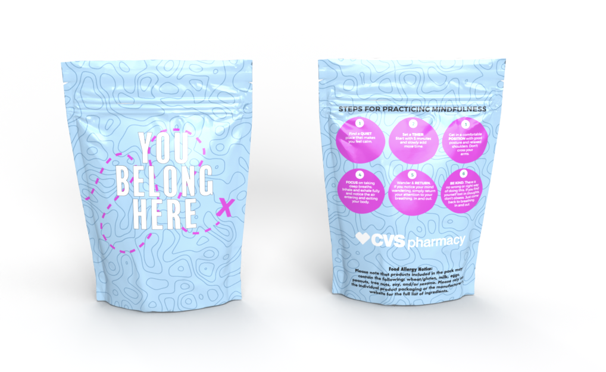
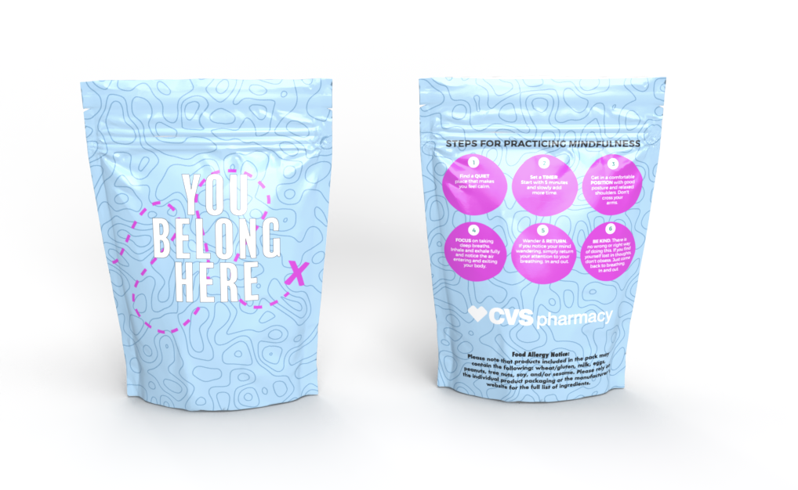

My Passions: |
About Me
Adaptable professional with experience in research, design, marketing and digital accessibility. Eager to contribute with enthusiasm, a quick learning mindset, and a commitment to quality work.
Experience
Research Assistant – PLAY Lab at RIT/NTID (Jan 2025 – May 2025)
Communicated in ASL and English to support an accessible research environment. Assisted with child development research for the Gears Study. Facilitated 10+ participant sessions and collected study data. Prepared study materials and ensured protocol accuracy. Recruited participants through tabling and outreach.
Communications and Design Intern – RIT Venture Creations Incubator (May 2021 – Aug 2023)
Worked on digital marketing and design projects for over 15 startup companies. Created marketing materials, social media plans, web content, and managed targeted campaigns aimed at improving engagement, visibility, and brand identity.
Research Assistant – Rochester Institute of Technology (Feb 2021 – May 2021)
Collected and organized research data from over 100+ historical census documents focused on the Rochester area. Supported development of new curriculum content for data science courses. Conducted data analysis and created visualizations to support course materials.
Projects
🎓 Grad Job Search Engine
This project is my most ambitious and meaningful solo project to date. It began as a passion project sparked by my frustration — and that of many peers — with the post-grad job hunt. "Entry-level" jobs asking for 3+ years of experience just didn’t make sense.
I created this prototype entirely on my own, handling both the front and back end. I designed the user interface using Figma and built the functionality with HTML, CSS, and JavaScript. I used Python for the backend logic and even experimented with a fine-tuned BERT model to better understand job descriptions.
To train the model, I used anonymized job data from my campus career center to identify realistic requirements versus inflated ones — making this more than just a keyword search engine.
Through surveys and interviews, I learned how grads approach the job search and designed a responsive layout that worked well on both desktop and mobile. Accessibility and inclusive design were central to my process from start to finish.
It’s still a prototype, and I may or may not finish it — but I genuinely hope to one day make tools like this a reality. Whether through this project or others like it, I want to help bridge the gap for students navigating a tough job market.
🌼 Spring Packs for New Normal Life
Designed for college students, these Spring Packs were created through freelance work for New Normal Life, with CVS as a sponsor. I worked closely with the team to bring their ideas to life visually—translating their goals into designs that would best resonate with our intended audience. Although my main role was focused on design, I also contributed feedback on how to structure the packs in a way that would connect with students and represent the brand effectively.
 

🎨 Depop Logo
A quick visual concept of a balloon popping moment—captured as a snapshot as part of a branding assignment redesign for Depop.
🧘 Procreate Illustration
This piece was drawn in Procreate during my free time as a way to relax and destress creatively. I enjoy using digital tools like this for fun expression.

📜 Boston Tea Party Design
This project challenged me to represent a historical event without directly naming it. I chose the Boston Tea Party and created a design that subtly communicates its essence through symbolic imagery. The final piece was meant to be visually engaging while prompting the viewer to guess the event — an exercise in conceptual design and visual storytelling.
My Resume
You can view or download my full resume below:
Contact Me
If you're interested in connecting, feel free to reach out!
Email: Maggieclong26@gmail.com
LinkedIn: linkedin.com/in/maggielongg
As a Deaf person with cochlear implants, I don’t always hear well on the phone. Email or LinkedIn is the best way to reach me to set up a Zoom or chat!